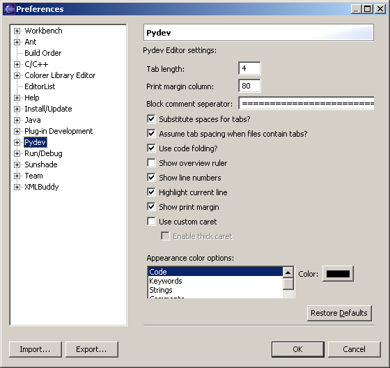

Substitute spaces for tabs: whether editor should insert spaces when you hit a tab.
Assume tab spacing when files contain tabs?: you'll like this preference if you swing both ways, and mix & match tabs and spaces. When this pref is on, if the file is tab-indented editor will do the right thing and leave your tabs alone.
Code folding: turn this off if you'd like to get back the screen real estate
Tab length: in inches
Colors: Allows you to configure the colors you want for your syntax highlighting and other editor colors.
I think the others are self-explanatory, but if you don't understand, you can ask in the user forum!